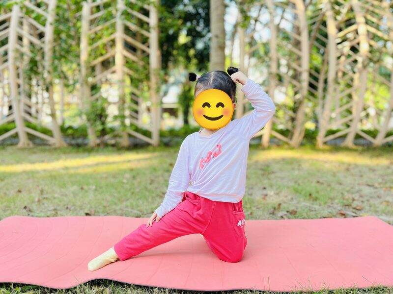

Chủ đề 32 · Ao hồ
Ếch Xanh và lá sen
🌟 Bài học trong câu chuyện
Giới luật yoga: Saucha – Sạch sẽ, gọn gàng. Bé giữ thân thể, đồ dùng và nơi mình ở sạch đẹp.
Kỹ năng sống: Giữ nguồn nước sạch, không vứt rác xuống ao.
1. Khởi động (2 phút)
Cả lớp ngồi xếp bằng thành vòng tròn. Cùng thở 3 hơi thở bông hoa: hít vào bằng mũi như ngửi hoa, thở ra bằng miệng thật chậm. Chắp tay trước ngực và chào nhau: “Namaste, chào các bạn!”
2. Câu chuyện: Ếch Xanh và lá sen (đọc cho bé nghe, 4 phút)
Cô đọc trọn câu chuyện cho bé nghe trước. Sau đó cô kể lại từng đoạn ngắn và cả lớp cùng tập 10 tư thế ở phần bên dưới.
Bên ao làng có bạn Ếch Xanh, bạn Vịt, đàn Cá, bác Rùa và cô Cò. Ao có những bông hoa sen hồng nở thơm ngát. Ếch thích nhất là ngồi trên lá sen hát "ộp ộp".
Nhưng dạo này, nước ao đục ngầu. Vịt bơi ra thấy vỏ chai, túi ni lông nổi lềnh bềnh. Đàn Cá thở khó nhọc, chẳng muốn bơi nữa. Ếch Xanh lo lắng: "Ao của chúng mình bẩn quá rồi!"
Chú Chuồn Chuồn bay vào làng gọi các bạn nhỏ. Bác Rùa lặn xuống đáy nhặt rác. Cô Cò đứng một chân, dùng mỏ gắp từng chiếc túi lên bờ. Bạn Ốc nhỏ lau sạch từng chiếc lá sen.
Các bạn nhỏ trong làng mang rác đi bỏ vào thùng, và hứa: "Từ nay mình không vứt rác xuống ao nữa". Cây sậy ven bờ đung đưa trong gió như đang cảm ơn.
Mấy hôm sau, nước ao trong xanh trở lại. Cá bơi tung tăng, sen nở thêm nhiều bông mới. Ếch Xanh nằm ngửa trên lá sen, nhìn trời xanh và nghỉ ngơi thật thoải mái. "Ao sạch thì ai cũng vui!"
3. Kể lại và tập 10 tư thế (6 phút)
-
 1
1Con ếch
🧘 Tư thế Con ếch (Frog)
Lời kể khi tập: Ếch Xanh nhảy lên lá sen: "Ộp ộp, nước bẩn quá!"
Cách làm: Ngồi xổm, hai tay chạm sàn giữa hai chân, bật nhảy nhẹ và kêu "ộp ộp". Giữ 3 đến 5 nhịp thở.
-
 2
2Hoa sen
🧘 Tư thế Hoa sen (Lotus)
Lời kể khi tập: Hoa sen vẫn nở thơm giữa ao.
Cách làm: Ngồi xếp bằng, lưng thẳng, hai tay đặt trên gối, ngón cái chạm ngón trỏ như búp sen, thở thật chậm. Giữ 3 đến 5 nhịp thở.
-
🦆Ảnh tư thế đang cập nhật3
Vịt bơi
🧘 Tư thế Châu chấu (Locust)
Lời kể khi tập: Vịt bơi ra, thấy vỏ chai, túi ni lông nổi lềnh bềnh.
Cách làm: Nằm sấp, tay xuôi bên người, nhấc đầu, ngực và chân lên khỏi thảm. Giữ 3 đến 5 nhịp thở.
-
🌸Ảnh tư thế đang cập nhật4
Cá bơi
🧘 Tư thế Con cá (Fish)
Lời kể khi tập: Cá thở khó vì nước bẩn.
Cách làm: Nằm ngửa, hai tay đặt dưới mông, ưỡn ngực nhẹ lên, đầu ngả ra sau chạm thảm. Giữ 3 đến 5 nhịp thở.
-
🐟Ảnh tư thế đang cập nhật5
Chuồn chuồn
🧘 Tư thế Chiến binh 2 (Warrior 2)
Lời kể khi tập: Chuồn Chuồn bay đi gọi các bạn nhỏ trong làng.
Cách làm: Dang rộng hai chân, gập gối trước, hai tay dang ngang, mắt nhìn theo bàn tay phía trước. Giữ 3 đến 5 nhịp thở.
-
🦆Ảnh tư thế đang cập nhật6
Con rùa
🧘 Tư thế Con rùa (Turtle)
Lời kể khi tập: Rùa lặn xuống nhặt rác dưới đáy ao.
Cách làm: Ngồi, mở rộng hai gối, luồn tay dưới gối, cúi người như rùa trốn vào mai. Giữ 3 đến 5 nhịp thở.
-
🌸Ảnh tư thế đang cập nhật7
Con cò
🧘 Tư thế Hồng hạc (Flamingo)
Lời kể khi tập: Cò dùng mỏ gắp rác lên bờ.
Cách làm: Đứng một chân, co chân kia lên, hai tay dang như cánh chim. Giữ 3 đến 5 nhịp thở.
-
 8
8Con ốc
🧘 Tư thế Em bé (Child's Pose)
Lời kể khi tập: Ốc nhỏ lau sạch lá sen.
Cách làm: Quỳ gối, ngồi lên gót chân, cúi người cho trán chạm thảm, hai tay duỗi ra trước hoặc để xuôi bên người. Giữ 3 đến 5 nhịp thở.
-

9Cây sậy trong gió
🧘 Tư thế Cánh cổng (Gate)
Lời kể khi tập: Cây sậy ven bờ đung đưa trong gió. Mình quỳ một gối, nghiêng người như cây sậy.
Cách làm: Quỳ một gối, chân kia duỗi thẳng sang ngang, nghiêng người về phía chân duỗi, tay vươn qua đầu. Đổi bên. Giữ 3 đến 5 nhịp thở.
-
🌸Ảnh tư thế đang cập nhật10
Lá sen nổi
🧘 Tư thế Thư giãn (Savasana)
Lời kể khi tập: Nước ao trong xanh trở lại. Ếch nằm trên lá sen nghỉ ngơi thật thoải mái.
Cách làm: Nằm ngửa, tay chân thả lỏng, nhắm mắt, thở thật chậm. Giữ 3 đến 5 nhịp thở.
4. Thư giãn (2 phút)
Các con nằm ngửa, tay chân thả lỏng, nhắm mắt lại. Cô nói nhẹ: “Hít vào thật chậm… thở ra thật chậm… Con nhớ lại câu chuyện vừa rồi, nhớ người bạn mình thích nhất trong truyện. Cơ thể con mềm như bông, nhẹ như mây.” Sau đó các con nghiêng người, từ từ ngồi dậy.
5. Trò chuyện cùng bé (1 phút)
Mọi người cùng làm sạch ao, giữ nước trong cho các bạn sống. Sạch sẽ là Saucha.
Cô hỏi các con:
- Vì sao không được vứt rác xuống ao hồ?
- Ao hồ có những con vật nào?
Kết thúc bằng lời chào “Namaste” và một nụ cười.
Lưu ý cho thầy cô và bố mẹ: Tập trên thảm, không tập ngay sau khi ăn no. Bé chỉ làm tới mức thấy dễ chịu, không ép bé. Tư thế đứng một chân có thể cho bé vịn tường hoặc vịn tay người lớn.